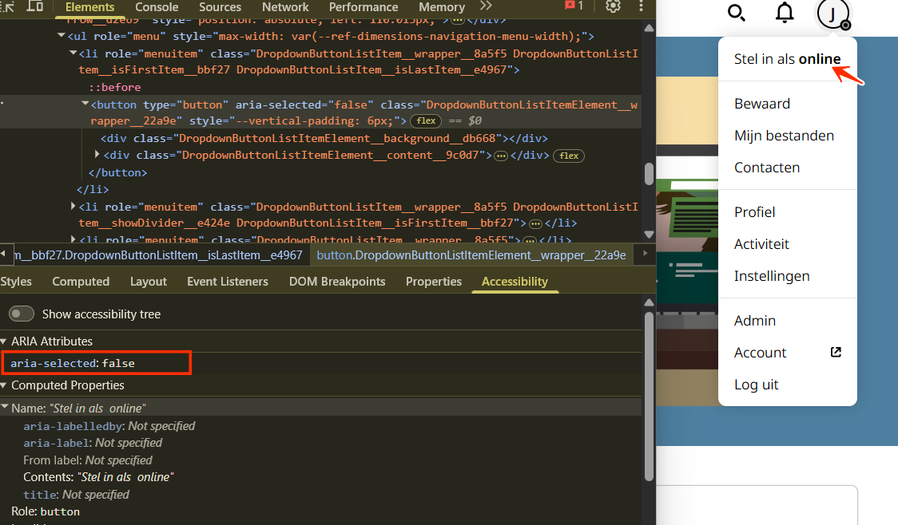
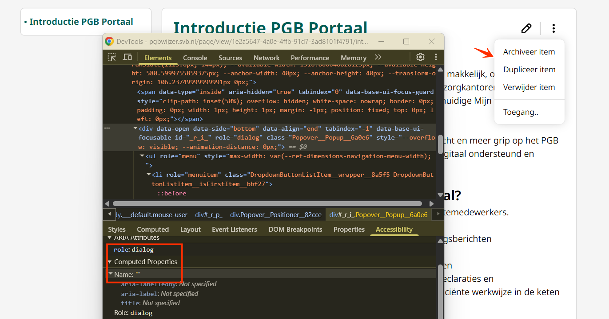
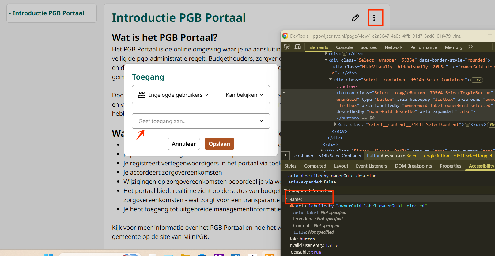
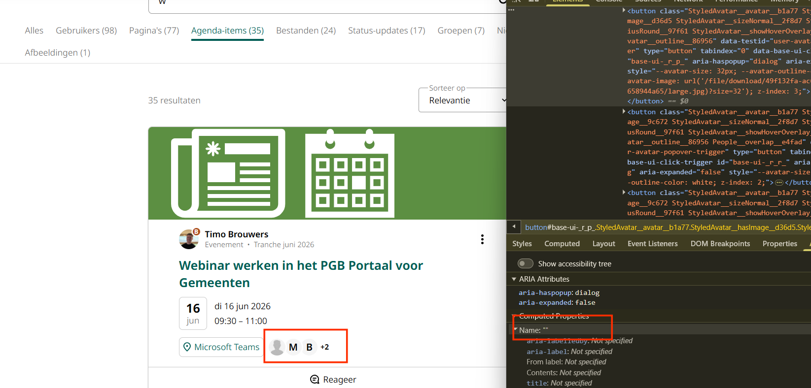
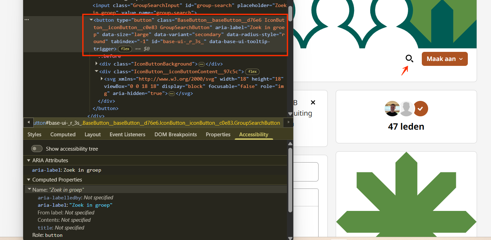
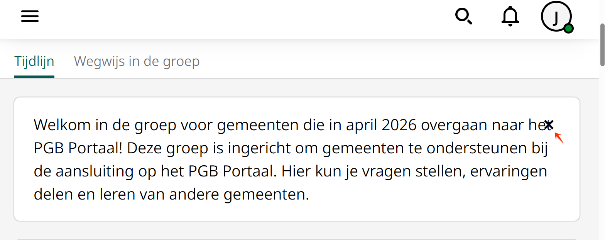

Techniekaudit digitale toegankelijkheid van website pgbwijzer.svb.nl
Samenvatting
Wij hebben de website pgbwijzer.svb.nl onderzocht tussen 10 en 13 juli 2026. Op dit moment is een deel van de succescriteria als voldoende beoordeeld. In dit rapport lees je welke punten nog verbetering behoeven en hoe deze kunnen worden aangepakt.
Dit onderzoek richt zich op de techniek van de website. Contentaspecten zijn niet onderzocht.
In de header staat een knop met een bel-icoon die een dialoogvenster opent. Dit dialoogvenster heeft geen toegankelijke naam. Een blinde bezoeker heeft deze naam nodig om te begrijpen wat de inhoud van het dialoogvenster is.
Hetzelfde probleem doet zich voor bij het dialoogvenster dat opent als op de profielknop wordt geklikt.
User story
Ik lees de website met een schermlezer. Als ik een dialoogvenster open, kondigt mijn schermlezer niet aan wat het is. Ik verwacht dat mijn schermlezer mij direct vertelt waar het dialoogvenster over gaat.
Hoe te testen
Snelle controle met onze eigen tool: open de WCAG Radar en zet op het tabblad Developer de optie "Toon toegankelijke naam" aan. Controleer daarna met een schermlezer of elk interactief component (link, knop, invoerveld, custom widget) overbrengt: wat het is (rol), zijn naam, zijn huidige status (uitgeklapt, geselecteerd, aangevinkt) en waar relevant zijn waarde. Gebruik bij voorkeur native HTML boven custom ARIA.
Oplossing
Voeg een aria-label toe aan het dialoogvenster met een duidelijke en beknopte beschrijving van het doel en de inhoud.
#2 - Onjuiste ARIA-status gebruikt voor schakelknop
Impact: GrootType: TechniekWCAG: 4.1.2EN: 9.4.1.2

Op alle pagina's staat in de header een profielknop die een menu opent met daarin de knop "Stel in als offline". Deze knop heeft twee standen (aan/uit), maar gebruikt aria-selected om de status door te geven.
Het attribuut aria-selected is bedoeld voor selecteerbare items binnen widgets zoals tabs, grids, listboxen of opties, en is niet geschikt voor een schakelknop. Hierdoor kan hulpsoftware de huidige status van de knop niet correct overbrengen aan bezoekers.
User story
Als schermlezergebruiker wil ik dat schakelknoppen hun huidige status via het juiste ARIA-attribuut doorgeven, zodat ik weet of de functie aan of uit staat voordat ik de knop activeer.
Hoe te testen
Snelle controle met onze WCAG Radar: bekijk het element op het tabblad Developer. Bedien het element daarna en luister met een schermlezer. Controleer of de status meeverandert met het element: een selectievakje als aangevinkt of niet aangevinkt, een schakelknop als ingedrukt. De status moet bij elke interactie worden bijgewerkt.
Oplossing
Gebruik aria-pressed om de status van de schakelknop door te geven en werk de waarde dynamisch bij: true als de functie aan staat, false als die uit staat.
#3 - Onjuiste rol bij aria-haspopup
Impact: GrootType: TechniekWCAG: 4.1.2EN: 9.4.1.2
Op een klein scherm verschijnt een mobiele menuknop met het attribuut aria-haspopup="true". Dit attribuut moet worden gebruikt in combinatie met een bijbehorende rol op het element dat opent, zoals role="menu". Die rol ontbreekt op dit moment.
User story
Ik lees de website met een schermlezer. Als ik door het menu navigeer, hoor ik soms dat er een submenu wordt geopend, maar dat gedraagt zich niet zoals verwacht. Ik verwacht dat mijn schermlezer duidelijk aankondigt wat een menuknop doet en wat deze opent.
Hoe te testen
Snelle controle met onze eigen tool: open de WCAG Radar en zet op het tabblad Developer de optie "Toon toegankelijke naam" aan. Controleer daarna met een schermlezer of elk interactief component (link, knop, invoerveld, custom widget) overbrengt: wat het is (rol), zijn naam, zijn huidige status (uitgeklapt, geselecteerd, aangevinkt) en waar relevant zijn waarde. Gebruik bij voorkeur native HTML boven custom ARIA.
Oplossing
Het attribuut aria-haspopup geeft aan dat een element een popup kan openen en welk type popup dat is. Het element dat verschijnt moet de rol hebben die overeenkomt met de waarde van het attribuut. De waarde true betekent hetzelfde als menu. Zorg ervoor dat het menu de juiste ARIA-rol krijgt, namelijk role="menu", en dat elk menu-item role="menuitem" heeft. Is het de bedoeling om een eenvoudige lijst met navigatielinks te maken in plaats van een ARIA-menuwidget? Verwijder dan aria-haspopup="true" en gebruik een gewone lijststructuur.
#4 - Bezoekers die inzoomen tot 400% kunnen niet meer alle tekst lezen
In de header staat een knop met een profiel-icoon die een menu opent. Als de pagina wordt bekeken op een schermresolutie van 1280 bij 1024 pixels en wordt ingezoomd tot 400%, valt het profielmenu gedeeltelijk weg.
Inzoomen tot 400% mag de leesbaarheid van informatieve elementen niet belemmeren.
User story
Ik heb een visuele beperking. Als ik sterk inzoom op de pagina, verdwijnt sommige tekst gedeeltelijk van het scherm. Ik verwacht dat alle tekst zichtbaar en leesbaar blijft, ook bij hoge zoomniveaus.
Hoe te testen
Zet de browser op 320 CSS-pixels breed (of 1280 pixels bij 400% zoom) en scrol verticaal. Er mag geen horizontale scrolbalk nodig zijn om content te lezen, behalve bij echte tweedimensionale content zoals tabellen, kaarten en code. Let op banners, headers en lange URL's met een vaste breedte.
Oplossing
Zorg dat alles nog werkt en leesbaar is als een bezoeker inzoomt tot 400% op een scherm van 1280 bij 1024 pixels.
#5 - Elementen die toetsenbordfocus krijgen zijn bedekt
Als de website wordt verkleind naar een lagere resolutie, bedekt een sticky header een deel van de pagina-inhoud. Interactieve elementen zoals de link "Privacy" krijgen nog wel toetsenbordfocus, maar de focusindicator is verborgen achter de sticky header. Hierdoor kunnen bezoekers die met het toetsenbord navigeren niet zien waar de focus zich bevindt.
Elementen die focusbaar zijn mogen nooit volledig door andere content bedekt worden. Er moet altijd een gedeelte zichtbaar zijn, hoe klein ook.
User story
Ik gebruik de website met een toetsenbord. Als ik door de pagina navigeer, verdwijnt het element met focus achter de vaste balk bovenaan. Ik verwacht dat ik altijd kan zien welk element de focus heeft.
Hoe te testen
Tab door de pagina terwijl sticky headers, footers, cookiebanners en chatwidgets zichtbaar zijn. Bij elke stap moet ten minste een deel van het element met focus, inclusief de focusindicator, zichtbaar zijn. Het mag nooit volledig achter andere content verdwijnen.
Oplossing
Zorg ervoor dat de sticky header geen interactieve elementen of hun focusindicatoren bedekt. Pas hiervoor bijvoorbeeld de z-index aan, herpositioneer elementen of verklein de header dynamisch op kleinere schermen.
Deze pagina en de pagina "Home" hebben dezelfde tekst in het <title>-element van de pagina: "PGBWijzer".
Elke pagina hoort een beschrijvende titel te hebben die de inhoud van de pagina weergeeft. Wanneer meerdere pagina's dezelfde paginatitel hebben, kan dit verwarrend zijn voor bezoekers. De navigatie tussen pagina's wordt daardoor lastiger, vooral voor bezoekers die op de titelbalk of browsertabbladen vertrouwen om pagina's te herkennen.
User story
Ik lees de website met een schermlezer. Als ik meerdere tabbladen open heb, klinken de paginatitels hetzelfde en weet ik niet welk tabblad welke pagina is. Ik verwacht dat elke pagina een titel heeft die de inhoud duidelijk beschrijft.
Hoe te testen
Controleer de titel van elke pagina in het browsertabblad. De titel moet het onderwerp of doel van de pagina beschrijven.
Oplossing
Zorg ervoor dat het <title>-element van elke pagina de inhoud van de betreffende pagina nauwkeurig beschrijft.
Op deze pagina staan links die zijn verborgen met aria-hidden="true", zoals de link "Naar introductie PGB Portaal" en links met afbeeldingen, zoals de link boven de kop "Voorbereiding". Hierdoor zijn de links (inclusief alle elementen daarbinnen) onzichtbaar voor schermlezers. De verborgen klikbare elementen kunnen op dit moment echter nog wel toetsenbordfocus krijgen.
Dit zorgt voor een aantal problemen. Zo kunnen blinde bezoekers nog steeds met het toetsenbord naar deze elementen navigeren, alleen weten ze niet wat deze elementen zijn of wat hun functie is.
Als ik met een schermlezer en het toetsenbord navigeer, moet elk element dat ik kan bereiken worden aangekondigd. Anders land ik op knoppen of links die mijn schermlezer volledig negeert.
Hoe te testen
Snelle controle met onze eigen tool: open de WCAG Radar en zet op het tabblad Developer de optie "Toon toegankelijke naam" aan. Controleer daarna met een schermlezer of elk interactief component (link, knop, invoerveld, custom widget) overbrengt: wat het is (rol), zijn naam, zijn huidige status (uitgeklapt, geselecteerd, aangevinkt) en waar relevant zijn waarde. Gebruik bij voorkeur native HTML boven custom ARIA.
Oplossing
Zorg dat elementen die met aria-hidden zijn verborgen zelf geen toetsenbordfocus kunnen krijgen, en zorg dat ze ook geen elementen bevatten die focus kunnen krijgen.
Wil je een link volledig verbergen? Gebruik dan de CSS-eigenschap display: none.
#8 - Niet-interactieve datum heeft onterecht de rol van knop
Onder de kop "Actueel" staat een carrousel met artikelen. De publicatiedatum in elk artikel heeft de rol van knop, terwijl de datum niet interactief is.
Een knop-rol op niet-interactieve content geeft onjuiste semantiek. Bezoekers die hulpsoftware gebruiken kunnen daardoor functionaliteit verwachten die er niet is.
Als schermlezergebruiker wil ik dat alleen interactieve elementen als knop worden aangekondigd, zodat ik precies weet welke elementen ik kan bedienen en niet in verwarring raak door content die onterecht als knop wordt gepresenteerd.
Hoe te testen
Snelle controle met onze eigen tool: open de WCAG Radar en zet op het tabblad Developer de optie "Toon toegankelijke naam" aan. Controleer daarna met een schermlezer of elk interactief component (link, knop, invoerveld, custom widget) overbrengt: wat het is (rol), zijn naam, zijn huidige status (uitgeklapt, geselecteerd, aangevinkt) en waar relevant zijn waarde. Gebruik bij voorkeur native HTML boven custom ARIA.
Oplossing
Verwijder de knop-rol en de tabindex van het datum-element en houd het niet-interactieve tekst. Is er extra context nodig? Behoud dan de visueel verborgen tekst zonder het element als knop te presenteren.
Op deze pagina, onder de kop "Actueel", zit de toetsenbordfocus vast in een component: de carrousel. Zodra de focus de carrousel binnengaat, kan die de carrousel niet meer verlaten om verder te gaan naar elementen lager op de pagina. Met Shift+Tab kun je nog wel terug naar eerdere elementen op de pagina, maar niet verder naar beneden.
Wanneer de toetsenbordfocus vastzit, kunnen bezoekers die uitsluitend met het toetsenbord navigeren de rest van de pagina niet bereiken. Dit raakt bezoekers met een motorische of visuele beperking die afhankelijk zijn van toetsenbordnavigatie. Een focusval maakt de rest van de pagina-inhoud in de praktijk ontoegankelijk. Het moet altijd mogelijk zijn om de focus met standaard toetsenbordbediening, zoals Tab, uit een component te verplaatsen.
User story
Ik gebruik de website met een toetsenbord. Als ik een component open, zit mijn focus vast en kan ik de rest van de pagina niet bereiken. Ik verwacht dat ik een component altijd met Tab kan verlaten.
Hoe te testen
Tab door de hele pagina, inclusief modals, videospelers en iframes. De focus moet altijd met Tab kunnen vertrekken; geen enkel element mag de focus permanent vasthouden. Een tijdelijke focusval (bijvoorbeeld een modal) is alleen acceptabel met een duidelijke uitweg, zoals de Escape-toets of een sluitknop.
Oplossing
Zorg ervoor dat de toetsenbordfocus altijd met de Tab-toets uit het component kan worden verplaatst.
Het zijmenu bevat een lijst met links. Het lijst-element heeft echter directe child-elementen die niet zijn toegestaan: <ul></ul>. Een <ul> mag alleen <li>-elementen als directe children bevatten.
Als schermlezergebruiker heb ik navigatielijsten met een geldige semantische structuur nodig, zodat ik de relatie tussen lijstitems begrijp en voorspelbaar door het menu kan navigeren.
Hoe te testen
Inspecteer de pagina met een schermlezer of bekijk de broncode en controleer of visueel gepresenteerde lijsten zijn opgemaakt met lijstelementen (<ul>, <ol>, <li>). Controleer of de lijststructuur geldig is: alleen <li>-elementen als directe children van <ul> of <ol>.
Oplossing
Zorg ervoor dat de <ul> alleen <li>-elementen als directe children bevat. Zijn er extra containers nodig? Plaats die dan binnen de betreffende <li>-elementen.
#11 - Overweeg navigatie-landmarks voor groepen navigatielinks
De pagina bevat meerdere groepen links die als navigatie dienen, zoals het kruimelpad en het zijmenu. Deze groepen zijn niet als navigatie-landmark opgemaakt.
Navigatie-landmarks helpen bezoekers die hulpsoftware gebruiken om de verschillende navigatiegebieden op de pagina snel te herkennen en ertussen te navigeren.
Als schermlezergebruiker wil ik dat groepen navigatielinks als navigatie-landmark herkenbaar zijn, zodat ik snel tussen de verschillende navigatiegebieden op de pagina kan springen zonder alle links te hoeven doorlopen.
Hoe te testen
Snelle controle met onze eigen tool: open de WCAG Radar en zet op het tabblad Developer de optie "Toon toegankelijke naam" aan. Controleer daarna met een schermlezer of elk interactief component (link, knop, invoerveld, custom widget) overbrengt: wat het is (rol), zijn naam, zijn huidige status (uitgeklapt, geselecteerd, aangevinkt) en waar relevant zijn waarde. Gebruik bij voorkeur native HTML boven custom ARIA.
Oplossing
Plaats groepen navigatielinks in een <nav>-element of gebruik waar passend role="navigation". Staan er meerdere navigatie-landmarks op de pagina? Geef ze dan elk een unieke toegankelijke naam, bijvoorbeeld met aria-label of aria-labelledby, zodat bezoekers ze makkelijk van elkaar kunnen onderscheiden.
#12 - Logo heeft geen tekstalternatief (het alt-attribuut is leeg)
Impact: GrootType: TechniekWCAG: 1.1.1EN: 9.1.1.1
Onder de kop "Wat kunnen gemeenten in het PGB Portaal?" staat een logo met de zichtbare tekst "mijnpgb". Dit logo heeft echter geen tekstalternatief: het alt-attribuut is leeg.
Logo's zijn informatieve afbeeldingen en hebben een tekstalternatief (de alt-tekst) nodig. De alt-tekst moet de volledige tekst bevatten die in het logo zichtbaar is. Zo begrijpen ook bezoekers die de afbeelding niet kunnen zien wat er staat.
User story
Ik lees de website met een schermlezer. Als ik bij een logo kom, hoor ik niet welke organisatie of dienst het logo toont, omdat het tekstalternatief ontbreekt. Ik verwacht dat het logo een tekstalternatief heeft met de volledige tekst uit het logo.
Hoe te testen
Navigeer met een schermlezer naar het logo en controleer of het wordt aangekondigd met een betekenisvol tekstalternatief. Controleer of het logo niet wordt aangekondigd als een naamloze link of afbeelding, maar de volledige zichtbare tekst bevat.
Oplossing
Voeg een tekstalternatief toe aan deze afbeelding met de zichtbare tekst van het logo.
#13 - Dialoogvenster heeft geen toegankelijke naam
Impact: GrootType: TechniekWCAG: 4.1.2EN: 9.4.1.2

Naast de kop "Introductie PGB Portaal" staat een knop met drie puntjes die een dialoogvenster met een menu opent. Dit dialoogvenster heeft geen toegankelijke naam. Een blinde bezoeker heeft deze naam nodig om te begrijpen wat de inhoud van het dialoogvenster is.
Hetzelfde probleem doet zich voor op pagina's:
https://pgbwijzer.svb.nl/search?q=w in het tabblad "Agenda-items", in het tabblad "Status-updates" na het klikken op de "Like"-knop, en in het tabblad "Groepen"
Ik lees de website met een schermlezer. Als ik een dialoogvenster open, kondigt mijn schermlezer niet aan wat het is. Ik verwacht dat mijn schermlezer mij direct vertelt waar het dialoogvenster over gaat.
Hoe te testen
Snelle controle met onze eigen tool: open de WCAG Radar en zet op het tabblad Developer de optie "Toon toegankelijke naam" aan. Controleer daarna met een schermlezer of elk interactief component (link, knop, invoerveld, custom widget) overbrengt: wat het is (rol), zijn naam, zijn huidige status (uitgeklapt, geselecteerd, aangevinkt) en waar relevant zijn waarde. Gebruik bij voorkeur native HTML boven custom ARIA.
Oplossing
Voeg een aria-label toe aan het dialoogvenster met een duidelijke en beknopte beschrijving van het doel en de inhoud.
#14 - Toetsenbordfocus komt niet op een logische plek nadat het dialoogvenster is gesloten
Impact: GrootType: TechniekWCAG: 2.4.3EN: 9.2.4.3
Naast de kop "Introductie PGB Portaal" staat een knop met drie puntjes die een dialoogvenster met een menu opent. Dit menu bevat knoppen die modale dialoogvensters openen. Na het sluiten van deze dialoogvensters keert de toetsenbordfocus niet terug naar het element dat het venster opende, of naar het volgende logische element in de focusvolgorde van de pagina.
Ik gebruik de website met een toetsenbord en een schermlezer. Als ik een dialoogvenster sluit, springt de focus naar de bovenkant van de pagina in plaats van naar waar ik was. Ik verwacht dat de focus terugkeert naar het element dat het dialoogvenster opende.
Hoe te testen
Tab van boven naar beneden door de pagina en noteer sprongen die niet overeenkomen met de visuele volgorde. Open elke modal, dropdown en elk dynamisch component en controleer of de focus op een logische plek terechtkomt. Vermijd positieve tabindex-waarden volledig.
Oplossing
Zorg dat de focus na het sluiten van het dialoogvenster terechtkomt op het element waarmee het venster werd geopend.
#15 - Knop heeft geen toegankelijke naam
Impact: GrootType: TechniekWCAG: 4.1.2EN: 9.4.1.2

Naast de kop "Introductie PGB Portaal" staat een knop met drie puntjes die een dialoogvenster met een menu opent. In dit menu staat de knop "Toegang", die een modaal dialoogvenster opent met een knop "Geef toegang aan". Deze knop heeft geen toegankelijke naam.
User story
Ik gebruik de website met een toetsenbord en een schermlezer. Als ik een knop bereik, kondigt de schermlezer alleen "knop" aan zonder verdere context. Ik verwacht dat elke knop een duidelijke naam heeft, zodat ik weet wat de knop doet.
Hoe te testen
Snelle controle met onze eigen tool: open de WCAG Radar en zet op het tabblad Developer de optie "Toon toegankelijke naam" aan. Controleer daarna met een schermlezer of elk interactief component (link, knop, invoerveld, custom widget) overbrengt: wat het is (rol), zijn naam, zijn huidige status (uitgeklapt, geselecteerd, aangevinkt) en waar relevant zijn waarde. Gebruik bij voorkeur native HTML boven custom ARIA.
Oplossing
Geef de knop een duidelijke toegankelijke naam. Dit kan door zichtbare tekst in het <button>-element te plaatsen, een aria-label toe te voegen of visueel verborgen tekst te gebruiken.
Voorbeeld: <button aria-label="Geef toegang aan"> of <button><span class="visually-hidden">Geef toegang aan</span></button>.
In het tabblad "Agenda-items" staan artikelen van "Timo Brouwers" waarbij de avatar een knop is met de toegankelijke naam "B". Die naam beschrijft de functie van de knop niet. Dit maakt het voor blinde bezoekers en bezoekers die een schermlezer gebruiken lastig om het doel van de knop te begrijpen. De toegankelijke naam moet de actie van de knop duidelijk en beknopt overbrengen.
Hetzelfde probleem doet zich voor in het tabblad "Status-updates".
Ik lees de website met een schermlezer. Als ik een knop tegenkom, hoor ik een naam die mij niet vertelt wat de knop doet. Ik verwacht dat elke knop een duidelijke naam heeft die de actie beschrijft.
Hoe te testen
Controleer alle toegankelijke namen van knoppen om te beoordelen of ze beschrijvend zijn voor de functie die de knop heeft.
Oplossing
Pas de toegankelijke naam aan, bijvoorbeeld met aria-label, zodat die de functie van de knop beschrijft, zoals "Bekijk informatie over Timo Brouwers".
#17 - Knop heeft geen toegankelijke naam
Impact: GrootType: TechniekWCAG: 4.1.2EN: 9.4.1.2

In het tabblad "Agenda-items" staan artikelen met letterknoppen, zoals "M" en "B". Deze knoppen hebben geen toegankelijke naam.
Hetzelfde probleem doet zich voor in het tabblad "Vragen" bij avatarknoppen.
Ik gebruik de website met een toetsenbord en een schermlezer. Als ik een knop bereik, kondigt de schermlezer alleen "knop" aan zonder verdere context. Ik verwacht dat elke knop een duidelijke naam heeft, zodat ik weet wat de knop doet.
Hoe te testen
Snelle controle met onze eigen tool: open de WCAG Radar en zet op het tabblad Developer de optie "Toon toegankelijke naam" aan. Controleer daarna met een schermlezer of elk interactief component (link, knop, invoerveld, custom widget) overbrengt: wat het is (rol), zijn naam, zijn huidige status (uitgeklapt, geselecteerd, aangevinkt) en waar relevant zijn waarde. Gebruik bij voorkeur native HTML boven custom ARIA.
Oplossing
Geef de knop een duidelijke toegankelijke naam. Dit kan door zichtbare tekst in het <button>-element te plaatsen, een aria-label toe te voegen of visueel verborgen tekst te gebruiken.
#18 - Dialoogvenster heeft geen toegankelijke naam
Impact: GrootType: TechniekWCAG: 4.1.2EN: 9.4.1.2
Op deze pagina staat een knop "Beheer" die een dialoogvenster met een menu opent. Dit dialoogvenster heeft geen toegankelijke naam. Een blinde bezoeker heeft deze naam nodig om te begrijpen wat de inhoud van het dialoogvenster is.
Hetzelfde probleem doet zich voor bij het dialoogvenster dat opent door op de knop "Maak aan" te klikken.
User story
Ik lees de website met een schermlezer. Als ik een dialoogvenster open, kondigt mijn schermlezer niet aan wat het is. Ik verwacht dat mijn schermlezer mij direct vertelt waar het dialoogvenster over gaat.
Hoe te testen
Snelle controle met onze eigen tool: open de WCAG Radar en zet op het tabblad Developer de optie "Toon toegankelijke naam" aan. Controleer daarna met een schermlezer of elk interactief component (link, knop, invoerveld, custom widget) overbrengt: wat het is (rol), zijn naam, zijn huidige status (uitgeklapt, geselecteerd, aangevinkt) en waar relevant zijn waarde. Gebruik bij voorkeur native HTML boven custom ARIA.
Oplossing
Voeg een aria-label toe aan het dialoogvenster met een duidelijke en beknopte beschrijving van het doel en de inhoud.
#19 - Modaal dialoogvenster heeft geen toegankelijke naam
Impact: GrootType: TechniekWCAG: 4.1.2EN: 9.4.1.2
Op deze pagina staat een knop "Beheer" die een dialoogvenster met een menu opent. In dit menu opent de knop "Over groep" een modaal dialoogvenster. Dit dialoogvenster heeft geen toegankelijke naam. Een blinde bezoeker heeft deze naam nodig om te begrijpen wat de inhoud van het dialoogvenster is.
Hetzelfde probleem doet zich voor bij andere dialoogvensters op deze pagina.
User story
Ik lees de website met een schermlezer. Als ik een dialoogvenster open, kondigt mijn schermlezer niet aan wat het is. Ik verwacht dat mijn schermlezer mij direct vertelt waar het dialoogvenster over gaat.
Hoe te testen
Snelle controle met onze eigen tool: open de WCAG Radar en zet op het tabblad Developer de optie "Toon toegankelijke naam" aan. Controleer daarna met een schermlezer of elk interactief component (link, knop, invoerveld, custom widget) overbrengt: wat het is (rol), zijn naam, zijn huidige status (uitgeklapt, geselecteerd, aangevinkt) en waar relevant zijn waarde. Gebruik bij voorkeur native HTML boven custom ARIA.
Oplossing
Voeg een aria-label toe aan het dialoogvenster met een duidelijke en beknopte beschrijving van het doel en de inhoud.
#20 - Toetsenbordfocus komt niet op een logische plek nadat het dialoogvenster is gesloten
Impact: GrootType: TechniekWCAG: 2.4.3EN: 9.2.4.3
Op deze pagina staat een knop "Beheer" die een dialoogvenster met een menu opent. Dit menu bevat knoppen die modale dialoogvensters openen. Na het sluiten van deze modale dialoogvensters keert de toetsenbordfocus niet terug naar het element dat het venster opende, of naar het volgende logische element in de focusvolgorde van de pagina.
User story
Ik gebruik de website met een toetsenbord en een schermlezer. Als ik een dialoogvenster sluit, springt de focus naar de bovenkant van de pagina in plaats van naar waar ik was. Ik verwacht dat de focus terugkeert naar het element dat het dialoogvenster opende.
Hoe te testen
Tab van boven naar beneden door de pagina en noteer sprongen die niet overeenkomen met de visuele volgorde. Open elke modal, dropdown en elk dynamisch component en controleer of de focus op een logische plek terechtkomt. Vermijd positieve tabindex-waarden volledig.
Oplossing
Zorg dat de focus na het sluiten van het dialoogvenster terechtkomt op het element waarmee het venster werd geopend.
#21 - Knop geeft de uitklapstatus niet door
Impact: GrootType: TechniekWCAG: 4.1.2EN: 9.4.1.2

Naast de knop "Maak aan" staat een knop met een vergrootglas-icoon die het zoekveld toont of verbergt. De knop geeft de uitgeklapte of ingeklapte status echter niet door in de code.
Hierdoor kunnen bezoekers die hulpsoftware gebruiken niet bepalen of het zoekveld op dat moment uitgeklapt of ingeklapt is.
User story
Als schermlezergebruiker wil ik dat de zoekknop doorgeeft of het zoekveld uitgeklapt of ingeklapt is, zodat ik de huidige status van de interface begrijp en weet wat er gebeurt als ik de knop activeer.
Hoe te testen
Snelle controle met onze eigen tool: open de WCAG Radar en zet op het tabblad Developer de optie "Toon toegankelijke naam" aan. Controleer daarna met een schermlezer of elk interactief component (link, knop, invoerveld, custom widget) overbrengt: wat het is (rol), zijn naam, zijn huidige status (uitgeklapt, geselecteerd, aangevinkt) en waar relevant zijn waarde. Gebruik bij voorkeur native HTML boven custom ARIA.
Oplossing
Gebruik het attribuut aria-expanded op de knop en werk de waarde dynamisch bij: true als het zoekveld is uitgeklapt en false als het is ingeklapt.
#22 - Betekenis van verplicht-symbool niet uitgelegd
Impact: MediumType: ContentWCAG: 3.3.2EN: 9.3.3.2
Op deze pagina staat een formulier met een verplicht veld "Titel". Dit veld is gemarkeerd met een sterretje (asterisk). De betekenis van dit teken wordt nergens op de pagina uitgelegd.
User story
Door een cognitieve beperking, slechtziendheid of dyslexie lees ik langzamer. Als ik een formulier invul met een sterretje naast sommige velden, weet ik niet wat het sterretje betekent. Ik verwacht dat het formulier de betekenis van het sterretje bovenaan uitlegt.
Hoe te testen
Inspecteer elk invoerveld, elke groep selectievakjes en elke groep keuzerondjes. Elk veld heeft een zichtbaar label of een duidelijke instructie nodig die uitlegt wat er wordt verwacht. Alleen een placeholder is niet genoeg. Verplichte velden en bijzondere formaten (datum, postcode) hebben extra uitleg nodig.
Oplossing
Voeg direct boven het formulier een korte instructie toe die het symbool uitlegt, bijvoorbeeld: "Velden gemarkeerd met * zijn verplicht".
#23 - Bezoekers die inzoomen tot 200% kunnen niet meer alle tekst lezen
Impact: GrootType: TechniekWCAG: 1.4.4EN: 9.1.4.4

Als deze pagina wordt bekeken op een schermresolutie van 1280 bij 1024 pixels en wordt ingezoomd tot 200%, overlapt de knop met het kruis-icoon de tekst "overgaan naar het".
Inzoomen tot 200% mag de leesbaarheid van informatieve elementen niet belemmeren.
User story
Ik zoom in tot 200% om de pagina te lezen. Als ik op deze pagina inzoom, verdwijnt sommige tekst of overlapt die met andere content. Ik verwacht dat alle tekst zichtbaar en leesbaar blijft bij 200% zoom.
Hoe te testen
Zet de browser op 1280 pixels breed en zoom in tot 200%. Alle tekst moet leesbaar blijven en er mag geen content of functionaliteit verloren gaan. Test het hamburgermenu, sticky headers en formulieren. Test op mobiel ook met de tekstgrootte van het systeem op maximaal.
Oplossing
Zorg dat alles nog werkt en leesbaar is als een bezoeker inzoomt tot 200% op een scherm van 1280 bij 1024 pixels.
In het tabblad "Algemeen" staan de oranje knoppen "Exporteer gegevens" en "Zeg lidmaatschap op". Als deze pagina wordt bekeken op een schermresolutie van 1280 bij 1024 pixels en wordt ingezoomd tot 400%, valt de tekst van deze knoppen gedeeltelijk weg.
Inzoomen tot 400% mag de leesbaarheid van informatieve elementen niet belemmeren.
User story
Ik heb een visuele beperking. Als ik sterk inzoom op de pagina, verdwijnt sommige tekst gedeeltelijk van het scherm. Ik verwacht dat alle tekst zichtbaar en leesbaar blijft, ook bij hoge zoomniveaus.
Hoe te testen
Zet de browser op 320 CSS-pixels breed (of 1280 pixels bij 400% zoom) en scrol verticaal. Er mag geen horizontale scrolbalk nodig zijn om content te lezen, behalve bij echte tweedimensionale content zoals tabellen, kaarten en code. Let op banners, headers en lange URL's met een vaste breedte.
Oplossing
Zorg dat alles nog werkt en leesbaar is als een bezoeker inzoomt tot 400% op een scherm van 1280 bij 1024 pixels.
#25 - De relatie tussen selectievakjes is niet in de code vastgelegd
In het tabblad "Notifications" staan groepen selectievakjes. Visueel vormen deze elementen een groep, maar die relatie is niet vastgelegd in de code. Hierdoor kan hulpsoftware de relatie tussen de elementen niet begrijpen. Elke groep heeft bovendien een groepslabel, maar deze labels zijn in de code niet gekoppeld aan de bijbehorende groepen.
Door deze ontbrekende koppeling weten bezoekers die een schermlezer gebruiken niet welke relatie er is tussen de groepslabels en de formuliervelden die ze beschrijven.
User story
Ik lees de website met een schermlezer. Als ik een formulier met selectievakjes invul, hoor ik losse opties zonder te weten bij welke vraag ze horen. Ik verwacht dat mijn schermlezer de bijbehorende vraag aankondigt voordat ik een keuze maak.
Hoe te testen
Navigeer met een schermlezer naar de selectievakjes en controleer of het groepslabel wordt aangekondigd bij het binnengaan van de groep. Controleer in de broncode of de velden gekoppeld zijn aan hun zichtbare groepslabel, bijvoorbeeld via een <fieldset>- en <legend>-element.
Oplossing
Plaats de groepen selectievakjes in een <fieldset>-element. Geef de fieldset daarnaast een <legend>-element met de tekst van het groepslabel, bijvoorbeeld "Vermeldingen", zodat dit als naam van de groep dient. Zo ontstaat de juiste koppeling tussen het label en de gegroepeerde elementen.
#26 - Knop bestaat alleen uit een afbeelding zonder tekstalternatief
In het tabblad "Mailing" staat een knop met een tandwiel-icoon zonder tekstalternatief. Daardoor heeft de knop geen toegankelijke naam. Als een knop alleen uit een afbeelding bestaat, moet het tekstalternatief van de afbeelding de functie van de knop beschrijven.
User story
Ik lees de website met een schermlezer. Als ik een icoonknop tegenkom, hoor ik alleen "knop" zonder beschrijving van de functie. Ik verwacht dat mijn schermlezer duidelijk aankondigt wat de knop doet.
Hoe te testen
Snelle controle met onze WCAG Radar: zet de optie voor alt-teksten aan en bekijk elke afbeelding, elk icoon en elke SVG. Informatieve elementen hebben een toegankelijke naam nodig die de betekenis overbrengt: een alt-attribuut op een <img>, een aria-label of <title>-element op een SVG, of een toegankelijke naam op icoonfonts. Decoratieve elementen horen niet in de HTML thuis; gebruik dan een CSS-achtergrond. Staat een decoratief element toch in de HTML, verberg het dan voor hulpsoftware met aria-hidden="true" (of alt="" als het echt een <img> is). Controleer met een schermlezer dat er geen ruis (bestandsnaam, "afbeelding") wordt voorgelezen.
Oplossing
Voeg de beschrijving op een van de volgende manieren toe:
aria-label: voeg een aria-label-attribuut toe aan het knop-element met een beknopte beschrijving van de functie.
Visueel verborgen tekst: plaats beschrijvende tekst in het knop-element en verberg die visueel met CSS, terwijl de tekst beschikbaar blijft voor schermlezers.
#27 - Dialoogvenster heeft geen toegankelijke naam
Impact: GrootType: TechniekWCAG: 4.1.2EN: 9.4.1.2
In het tabblad "Profiel", naast de kop "Algemeen", staat een knop met een potlood-icoon om gegevens te bewerken. Na het klikken op deze knop verschijnen naast elk veld knoppen met een personen-icoon. Deze knoppen openen een dialoogvenster met een menu. Deze dialoogvensters hebben geen toegankelijke naam. Een blinde bezoeker heeft deze naam nodig om te begrijpen wat de inhoud van het dialoogvenster is.
User story
Ik lees de website met een schermlezer. Als ik een dialoogvenster open, kondigt mijn schermlezer niet aan wat het is. Ik verwacht dat mijn schermlezer mij direct vertelt waar het dialoogvenster over gaat.
Hoe te testen
Snelle controle met onze eigen tool: open de WCAG Radar en zet op het tabblad Developer de optie "Toon toegankelijke naam" aan. Controleer daarna met een schermlezer of elk interactief component (link, knop, invoerveld, custom widget) overbrengt: wat het is (rol), zijn naam, zijn huidige status (uitgeklapt, geselecteerd, aangevinkt) en waar relevant zijn waarde. Gebruik bij voorkeur native HTML boven custom ARIA.
Oplossing
Voeg een aria-label toe aan het dialoogvenster met een duidelijke en beknopte beschrijving van het doel en de inhoud.
In het tabblad "Profiel", naast de kop "Algemeen", staat een knop met een potlood-icoon om gegevens te bewerken. Na het klikken op deze knop verschijnt een formulier. Dit formulier bevat een invoerveld voor persoonlijke informatie (e-mailadres) waarop het autocomplete-attribuut ontbreekt.
Wanneer formulieren persoonsgegevens verzamelen, moet bij deze invoervelden het juiste autocomplete-attribuut worden gebruikt. Dit stelt browsers en hulpsoftware in staat om bezoekers te ondersteunen, bijvoorbeeld door de velden automatisch in te vullen.
User story
Ik heb beperkte motoriek of tremoren. Als ik een formulier met mijn naam en e-mailadres invul, kan mijn browser de velden niet automatisch invullen. Ik verwacht dat persoonlijke velden automatisch worden ingevuld door mijn browser of hulpsoftware.
Hoe te testen
Inspecteer bij elk invoerveld voor persoonsgegevens (naam, adres, telefoon, e-mail, wachtwoord) het autocomplete-attribuut. De waarde moet overeenkomen met de lijst uit WCAG. Laat de browser het formulier daarna automatisch invullen en controleer of de juiste waarde in het juiste veld terechtkomt.
Oplossing
Het autocomplete-attribuut ontbreekt op dit moment bij dit invoerveld. Gebruik het autocomplete-attribuut voor alle velden waarin persoonsgegevens moeten worden ingevuld. Meer informatie over dit attribuut en de verplichte waarden: https://www.w3.org/Translations/WCAG22-nl/#input-purposes.
Over dit onderzoek
Leeswijzer
Onze rapporten zijn anders. Bij het bespreken van de gevonden problemen volgen wij niet de structuur van de norm, maar die van jouw website of app. Hierdoor kun je gewoon per pagina of scherm aan de slag gaan. Wel zo makkelijk! Je vindt verderop een overzicht van alle pagina’s met problemen.
We geven je bij elk gevonden issue een paar voorbeelden, maar niet een complete lijst. Controleer zelf of het probleem ook nog op andere plekken voorkomt. Zie het rapport als een leidraad.
Gebruikte norm
Dit onderzoek laat zien in hoeverre de website op dit moment voldoet aan WCAG 2.2, niveau A en AA. WCAG staat voor Web Content Accessibility Guidelines. Dit is de internationale norm voor digitale toegankelijkheid. De Europese norm EN 301 549 bevat alle eisen van WCAG op niveau A en AA.
In dit rapport hebben we korte beschrijvingen van de succescriteria uit de norm opgenomen, met een algemene uitleg erbij. Wil je ze helemaal lezen? Bekijk dan de documentatie van WCAG.
Gebruikte onderzoeksmethode
We gebruiken de onderzoeksmethode WCAG-EM van het W3C. Het proces ziet er als volgt uit:
vaststellen wat binnen en buiten scope valt
vaststellen welke technologieën zijn gebruikt
steekproef (sample) samenstellen
steekproef onderzoeken
gevonden issues beschrijven
Het grootste deel van het onderzoek doen we met de hand. Voor een deel van de toegankelijkheidseisen gebruiken we automatische tools als ondersteuning, zoals axe-core en Chrome Developer Tools.
Belangrijk om te weten
Dit rapport helpt je om de toegankelijkheid van je website te verbeteren. Maar let op: het is geen definitieve, volledige lijst van alle aanwezige toegankelijkheidsproblemen. Dat zit zo:
Het is een steekproef
Ten eerste is het onderzoek gebaseerd op een steekproef. Die is op een betrouwbare manier genomen, en de meeste problemen zullen daardoor zeker aan het licht komen. Toch kan een probleem net buiten de steekproef vallen. Bij een volgend onderzoek kan het wel ontdekt worden.
Op basis van falsificatie
We beoordelen vanuit het principe van falsificatie. Dat houdt in dat we proberen te bewijzen dat iets niet waar is, in plaats van te bevestigen dat het klopt. ‘Voldoet’ betekent daarom dat we geen reden hebben gevonden om een punt af te keuren. Maar als we later wél een reden vinden, kan het alsnog worden afgekeurd.
Voortschrijdend inzicht
Het komt voor dat de beoordeling van een succescriterium op detailniveau verandert. De norm beschrijft namelijk niet élk mogelijk scenario. Samen met andere onderzoeksbureaus overleggen we hoe we met bepaalde situaties omgaan. Zo kan iets dat nu wordt afgekeurd, soms bij een volgend onderzoek worden goedgekeurd en andersom.
Oplossen leidt tot nieuw probleem
Ten slotte kan het gebeuren dat bij het oplossen van een probleem onbedoeld een nieuw toegankelijkheidsprobleem ontstaat. Dat komt dan bij een volgend onderzoek pas naar voren.
Hoe werkt dit rapport?
Bevindingen bekijken en filteren
Alle gevonden toegankelijkheidsproblemen staan onder Gevonden problemen. Je kunt de bevindingen filteren op:
Impact (Groot, Medium, Klein, Advies) — hoe ernstig is het probleem voor de gebruiker?
Type (Content, Techniek) — moet de inhoud of de techniek worden aangepast?
Status (Open, Opgelost) — welke problemen zijn al verholpen?
Voortgang bijhouden
Je kunt je voortgang op twee manieren bijhouden:
CSV-export — exporteer alle bevindingen als CSV-bestand en laad het in een (online) spreadsheet om met je team samen te werken.
Jira-export — exporteer alle bevindingen als Jira-compatibel CSV-bestand. Importeer het via Jira > Issues > Import issues from CSV. Bevindingen worden aangemaakt als bugs met prioriteit op basis van impact.
Registreer in de browser — activeer deze optie om per bevinding bij te houden of het is opgelost. Je voortgang wordt opgeslagen in je browser. Niemand anders kan je resultaat zien. Let op: de voortgang is gekoppeld aan je browser. Als je een andere browser of een ander apparaat gebruikt, begint de telling opnieuw.
Plan van aanpak — download een geprioriteerd plan van aanpak om de gevonden problemen stap voor stap op te lossen. Dit is beschikbaar bij audits vanaf maart 2026.
Link naar een specifieke bevinding delen
Bij elke bevinding verschijnt een link-icoon wanneer je er met de muis overheen gaat. Klik op dit icoon om de directe link naar die bevinding te kopiëren. Je kunt deze link plakken in een e-mail of chatbericht, bijvoorbeeld om een vraag te stellen aan Proper Access over een specifiek punt.